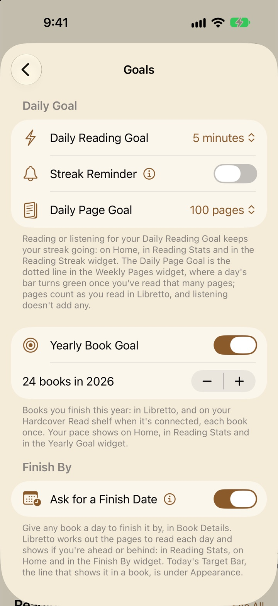

Goals, stats and sharing
How Libretto counts your reading, the goals you can set (a few minutes a day, a number of books a year, a day to finish a book by), where you see how it’s going, and how to share it.
What Libretto counts
Libretto keeps a day-by-day log of three things: the pages you read, the time you spend reading, and the time you spend listening. Everything on this page is built from it.
Time
- Reading time runs while a book is open and Libretto is on screen. A long pause between page turns counts as five minutes at most, so a book left open on the nightstand doesn’t count all night.
- Listening time runs while an audiobook plays.
- While a book’s paired audiobook plays along with it, that time counts as listening, so it’s never counted twice.
Pages
- Pages are printed pages, so they don’t change with your font or text size: Hardcover’s page count for a book linked there, otherwise an estimate at 275 words a page from the book’s own text. A PDF’s pages are its own, and each picture in a comic is a page.
- Reading forward counts the pages you cover. Going back and reading them again doesn’t count twice, and a jump of more than eight pages (from the contents, a search or the scrubber) counts nothing.
- Listening adds time, not pages.
A book you’re only browsing (Just Browse), or visiting from the Notebook, counts nothing unless you keep your progress.
Every device
With Sync with iCloud on, the log adds up across your iPhone and iPad, and reading or listening on Apple Watch and Apple TV counts too, so your goals and streak see all of it. See Sync with iCloud.
Sessions and Reading History
Each sitting with a book is kept as a session: when it started and ended, the pages you read, your reading and listening time, and where you began and finished.
- Closing the book ends a session, and so do 10 minutes without turning a page; the next page turn starts a new one. Time away from Libretto counts toward the 10 minutes. While a paired audiobook plays along, the narration keeps the session going.
- Listening to an audiobook without its book open is a session of its own, ended by 10 minutes paused.
- A sitting under a minute with less than a page read isn’t kept: opening a book to check something isn’t a session.
Book Details → Reading History lists a book’s sessions (its paired audiobook’s too) by day, newest first, with the totals at the top. Swipe one to delete it. For an audiobook, it’s Listening History in its long-press menu.
Reset Progress keeps a book’s sessions; removing the book deletes them.
Daily Reading Goal and your streak

Settings → Goals → Daily Reading Goal is how much reading or listening makes a day count: 1, 5, 10, 15 or 30 minutes (5 to start). It’s what your streak is made of everywhere: on Home, in Reading Stats and in the Reading Streak widget.
- Your streak is the days in a row you’ve met the goal.
- Today not met yet doesn’t break it. A streak only ends once a whole day goes by without your minutes, so you can read at bedtime without your streak looking broken all afternoon.
- Reading and listening both count, on any device.
- Met days are lit in orange, with a run of them joined into one band. Today, until you meet it, is a ring that fills as you read.
The goal goes to your other devices with your other goals.
Streak Reminder
Turn on Settings → Goals → Streak Reminder and pick a Time (8 PM to start). On any day you haven’t met your Daily Reading Goal by then, you get a notification saying what’s left:
- “Keep Your Streak Going: 3 more minutes today makes it 13 days in a row.”
- “Time to Read: 5 minutes of reading today starts a streak.”
Once you’ve met the goal, that day’s reminder doesn’t come. The next few days’ reminders are set up too, in more general words, in case you don’t open Libretto in between.
Turning it on asks to send notifications. If they’re off for Libretto, the switch stays off and offers Open Settings.
Daily Page Goal
Settings → Goals → Daily Page Goal is a number of pages a day, from 10 to 300 (100 to start). It doesn’t affect your streak. It’s:
- the dotted line in the Weekly Pages widget, where a day’s bar turns green once it reaches the goal;
- Home’s Today target when no book has a Finish By date (“82 more pages reaches today’s 100”);
- what Left Today under the page counts toward in a book without a Finish By date (“86 pages to your daily goal”).
Pages count as you read in Libretto; listening doesn’t add any.
Yearly Book Goal
Turn on Settings → Goals → Yearly Book Goal and set a number of books for this year (“24 books in 2026”). Switching it on starts at your Hardcover goal for the year if you have one, or at 12.
What counts
- Books you finish in Libretto, on any device: read to the end, or marked with Mark as Read.
- With Hardcover connected, the books on your Read shelf there.
- Each book once, by its title, so one finished here and sent to Hardcover isn’t counted twice. A re-read counts again.
With the switch off, your Hardcover goal for the year is used instead, if it’s a number of books.
Your pace
An even pace from January 1 to December 31 says where you should be by now. Within half a book of it, you’re On pace; otherwise it says “2 books behind” or “1 book ahead”. Libretto also tells you what it takes from here (“A book every 9 days”, “2 books a week”) and, once two weeks of the year have gone, where your own pace ends up (“On pace for 27”).
Where you see it
- Reading Stats, at the top: the count, your standing, and the year as a chart, your books rising in steps against the even pace. Touch and drag along it for any day’s count.
- Home’s Reading Goal tile, which leads with what it takes (“A book every 8 days reaches 24”) or “On pace”. Home never says “behind”; Reading Stats has the plain numbers.
- The Yearly Goal widget, and the Reading Goal in the Reading Stats widget.
Finish By dates
A book club on Thursday, a library loan due back, or just wanting to finish before a trip: give a book a day to finish it by, and Libretto works out the pages for each day and keeps you posted. Any number of books can have one.
Setting a date
- In Book Details → Your Reading, tap Set a Finish Date… (or Change → Change Date… for one that has a date).
- In the book, choose ⋯ → Finish By….
- When you start a new book: after you choose Start Reading, Libretto asks Set a Finish Date? Tap Not Now to skip it, or turn the question off with Settings → Goals → Ask for a Finish Date.
The page shows the book’s pages and how far you are, then quick choices: Your Pace (the day your last two weeks’ pages a day would finish it), 1 Week, 2 Weeks and 1 Month, or any day in the calendar. Under them it says what that comes to (“About 23 pages a day for 14 days, today included.”). Tap Set.
The plan
The plan starts from where the book was when today began, so anything you’ve already read today counts. The rest is shared evenly over the days up to the end of your chosen day, today included. Each day has its share, and by tonight you should be at the end of today’s.
Pages are printed pages (Hardcover’s edition, or 275 words a page, or a PDF’s own), and where you are is your place here, or another device’s if it’s newer.
Ahead, behind and catching up
- On track
- You’re between where this morning should have found you and where tonight should: “18 pages to go today”, then “Today’s pages done”.
- Behind
- You’re short of where this morning should have found you: “12 pages behind”, with “Read 37 pages today to catch up”, which is the missed pages and today’s share together.
- Ahead
- You’re past where tonight should find you: “8 pages ahead”.
- Past your date
- The day has gone and the book isn’t finished: it says how many pages are left (“120 pages to go”).
- Finished
- Done, and the plan stops there.
Fallen too far behind to catch up in a day? Pick a new date: changing it starts the plan again from today, spreading what’s left over the new days.
Where you see it
- Book Details: the progress bar with tonight’s mark, “Finish by Nov 12”, your standing, and “18 pages to go today · 9 days left”, with Change.
- The book’s ⋯ menu: Finish By…, with the date and your standing.
- Home: the Today section’s target (“18 pages tonight keeps you on track with Emma”) and the Finish By tile, with the three most pressing books.
- Reading Stats: the Finish By card, every book with a date, the most pressing first. Tap one to read it.
- While you read: Today’s Target Bar along the bottom of the page, and Left Today in the line under it.
- The Finish By widget.
To take a date off, tap Change in Book Details and choose Remove Finish By Date…. It asks first; your reading isn’t changed. Dates go to your other devices with your other goals.
Today’s Target Bar and Home’s Today

Home’s Today
The first section on Home, once you have a book, is today at a glance:
- The ring fills toward your Daily Reading Goal (“12 of 15 min today”), with what it means for your streak: “3 min more keeps your streak”, “15 min starts a streak”, or “Daily goal met”. Tap it for Reading Stats’ time by day.
- The streak: your days in a row, or “No streak yet”. Tap it for Reading Streak.
- The next thing to read, in plain words. With a Finish By date, the most pressing book: “18 pages today keeps you on track with Emma”, “45 pages tonight catches you up on Emma” (“tonight” after 5 PM). Without one, your Daily Page Goal: “82 more pages reaches today’s 100”. Tap it to open the book, or the last seven days.
It always says what it takes rather than how far behind you are. Long-press it to edit or hide it, as with any section.
Today’s Target Bar
In a book with a Finish By date, a thin line runs along the very bottom of the page and fills as you read toward where tonight should find you, catching up included. It’s full once today’s pages are done. The same line runs across the bottom of the book’s card in Continue.
It hides while the menu is up, while you’re browsing, and with the iPhone Duo in tabletop posture.
- Today’s Target Bar On
- In Aa in a book, or Settings → Appearance. The switch turns off both the page’s line and the card’s.
- Its color
- The dot beside the switch opens 12 colors. Each App Theme keeps its own, so changing themes changes the bar with it. To start: Blue for System and Light, Orange for Sepia, Green for Dark, and Yellow for Midnight. The color is kept on each device.
Reading Stats

Open Reading Stats from its tab (turn it on in Settings → Home & Tabs), from Home’s Reading Stats section (See All, or tap a tile), from Today’s ring and streak, from Shelf’s ⋯ menu, or from a widget. Its ⋯ menu has Share Card….
- Goals
- This year’s book goal with its chart, and the Finish By card. Without either, a line on how to set them, and Set a Yearly Goal….
- Last 7 Days
- “Read in Libretto” over the last seven days: Pages today, Pages in 7 days, Reading and Listening; then Pages by Day, Time by Day (reading and listening stacked), and Reading Streak, with the seven days, how many you read on, and your longest streak.
- In Libretto
- By year or All Time, on all your devices and without Hardcover: books finished, pages read, reading, listening, days read and longest streak, then the Finished list and your top authors.
- From Hardcover
- With Hardcover connected: the books you’ve finished by year or all time, with genres, moods, ratings, lengths and more. See Hardcover.
The last seven days, today last
Libretto’s week is always the last seven days ending today, labelled “Today” at the end, never Sunday to Saturday. So on a Monday you still see a whole week of reading, not one lonely day. Every week figure works this way: Reading Stats, Home’s tiles, the streak’s row of days, the share card’s 7 Days and every widget.
Home’s tiles
Home’s Reading Stats section shows the tiles you choose in its options (long-press its title → Edit Section…, or Customize Home → Reading Stats), in the order you drag them. Each opens its part of Reading Stats:
- Reading Goal
- This year’s book goal and pace. Opens the goal’s card.
- Finish By
- The three most pressing books with a date, each with tonight’s mark. Opens the Finish By card.
- Pages Today, Pages in 7 Days, Pages by Day
- Open Last 7 Days.
- Time in 7 Days, Listening in 7 Days
- Open Time by Day.
- Reading Streak
- Opens Reading Streak.
- Books This Year, Pages This Year, Books All Time, Average Rating, Top Genre, Top Mood
- From Hardcover: open that year, all time, your ratings, or the top genre or mood with its books.
- Want to Read
- Opens your Want to Read shelf in Shelf.
The goal tiles show once there’s a goal to show, and the Hardcover tiles once Hardcover is connected. Reading Goal, Finish By and Pages by Day take a whole row.
Share Cards

A share card is an image about a book, or about a stretch of your reading, to send in Messages, keep in Journal, post as a story, copy, or save to Photos.
Open it with Share Card… in a book’s or audiobook’s long-press menu, the book’s ⋯ menu, Book Details, or Reading Stats’ ⋯ menu. And when you close a book you’ve just read to the end, Libretto offers one: a sheet saying “You Finished” and the book’s title, with Share Card… and Not Now. For a book linked to Hardcover, you get Hardcover’s question about marking it Read instead, which has Share Card… too.
A book card
Headed “Currently Reading”, “Finished Reading” or “Listening To”. Under Show, a switch for each piece: Cover, Title and Author, Progress, Rating (your Hardcover rating), Time Spent, Pages Read, Days Read, Started and Finished, Highlights Count, A Highlight (choose which under Highlight) and Libretto. Time and pages include the paired audiobook’s.
A reading card
From Reading Stats: choose Today, 7 Days, Month or Year, each up to today. Switches for Time Read, Reading and Listening, Pages, Streak, Days Read, Daily Goal (days you met it), Books Finished, Highlights, Chart (a bar a day, or a month for a year), Covers (the books you read, most time first) and Libretto.
Shape, style and sending
- Shape Square
- Square (1080 × 1080) for Messages and most feeds, or Story (1080 × 1920) for stories.
- Style Cover
- Cover is a deep shade of the book’s cover color (the first book’s, on a reading card); or Night, Paper or Sunset.
Only the switches that apply are shown (no Rating without one, no chart for a single day), and your choices are remembered for next time. With a lot switched on, the card makes room by drawing its pieces smaller, then leaving out the covers. When it looks right, tap Share, Copy or Save; saving asks once for permission to add to Photos.
Your reading in Journal
Apps can’t add suggestions to Apple’s Journal app, but Shortcuts can write an entry for you each night with Libretto’s Get Today’s Reading action. Settings → Journal explains how, and shows today’s entry as it would go in.
What the entry says
First the day: your reading and listening time, pages, “Daily goal met” and your streak. Then each book you read, listened to or highlighted, from every device: the time, the pages, where you got to (“Chapter 4” to “Chapter 6”), “Finished it!” if you did, and that day’s highlights as quotes with your notes. Books you marked as read that day follow.
Setting it up
On iOS 27, Describe It to Shortcuts has a prompt to copy: paste it into Shortcuts where it asks what you want your shortcut to do, and Apple Intelligence builds the automation for you. Check its steps before you save it. Or build it yourself:
In Shortcuts, open Automation and tap +, then Time of Day. Pick a time, like 9 PM, Daily, and Run Immediately.
Add Get Today’s Reading from Libretto. Turn on Include What Happened if you’d like a few sentences on each book.
Add Create Entry from Journal, and put Today’s Reading in its text.
- Day
- Leave it empty for today, or pick another day.
- Include What Happened Off
- A few spoiler-free sentences on what you read in each book, written on your device by Apple Intelligence. It takes a little longer.
- Format Markdown
- Markdown (bold and italics) or Plain Text.
On a day without reading, the shortcut stops at Get Today’s Reading and no entry is made. The action works with any app that takes text, too: Day One, Notes or a message.
Widgets
Your goals live on the Home Screen and Lock Screen too: Reading Streak, Yearly Goal, Finish By, Weekly Pages (your Daily Page Goal as a dotted line) and Reading Stats, alongside Currently Reading. The streak, goal and pages widgets move on at midnight by themselves, so a new day shows without opening Libretto. See Widgets, Siri and Shortcuts.
Questions
Does listening to an audiobook count toward my streak?
Yes. Your Daily Reading Goal is minutes of reading or listening, so an audiobook on a walk keeps your streak going. Listening adds time, not pages.
I read for ages but my pages barely moved. Why?
A few things don’t add pages: going back over pages you’ve already counted, jumping more than eight pages at once, browsing a book you haven’t started, and listening. And pages are printed pages, which usually hold more than a screen does at a large text size.
My streak says 0 but I read yesterday.
The day needs your Daily Reading Goal’s minutes, not just a page or two: check Settings → Goals → Daily Reading Goal. If you read on another device, make sure Sync with iCloud is on for both; opening Libretto fetches anything that hasn’t arrived yet. See Sync with iCloud.
I missed a day of my Finish By plan. Now what?
Today’s share grows to include what you missed (“Read 37 pages today to catch up”), and Today’s Target Bar fills toward it. If that’s too much for one day, pick a new date in Book Details: the plan starts again from today.
Do my goals go to my other devices?
Yes, with Sync with iCloud on: the Daily Reading Goal, Daily Page Goal, Yearly Book Goal and Finish By dates. The Streak Reminder and Today’s Target Bar color stay with each device.
Why doesn’t my week start on Sunday or Monday?
Libretto’s week is always the last seven days, with today at the end, so it’s never half empty at the start of a week.
Can I delete a session that shouldn’t be there?
Yes: Book Details → Reading History, then swipe the session to delete it.
Why is my book’s percent different from its Finish By page?
Finish By works in printed pages by the book’s words, while some places show a percent by chapters. They can differ a little in books with very long or very short chapters.